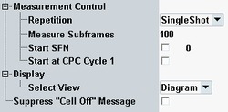

The "Measurement Control" parameters configure the scope of the measurement. The settings provide you also the selection of table or diagram view. In addition, the "Cell Off" message display is configurable.
See also: "Statistical Settings"

Defines how often the measurement is repeated if it is not stopped explicitly or by a failed limit check.
- Continuous: The measurement is continued until it is explicitly terminated. The results are periodically updated.
- Single-Shot: The measurement is stopped after one statistics cycle.
Single-shot is preferable if only a single measurement result is required under fixed conditions, which is typical for remote-controlled measurements. Continuous mode is suitable for monitoring the evolution of the measurement results in time and observe how they depend on the measurement configuration, which is typically done in manual control. The reset/preset values therefore differ from each other.
Specifies the number of subframes to be measured per measurement cycle (statistics cycle).
Remote command:Specifies the first system frame number for which the UL logging information is displayed.
Remote command:Starts the UL logging measurement two subframes before a CPC cycle 1. For CPC details, see "Continuous Packet Connectivity Settings".
Remote command:Switches a diagram or table view, see also "Measurement Results".
Remote command:n/a
Refer to "Suppress "Cell Off" Message".